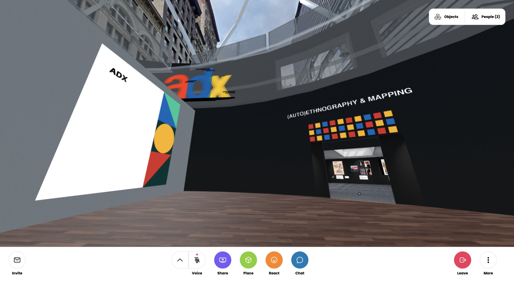
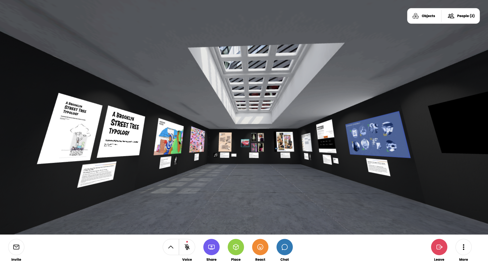
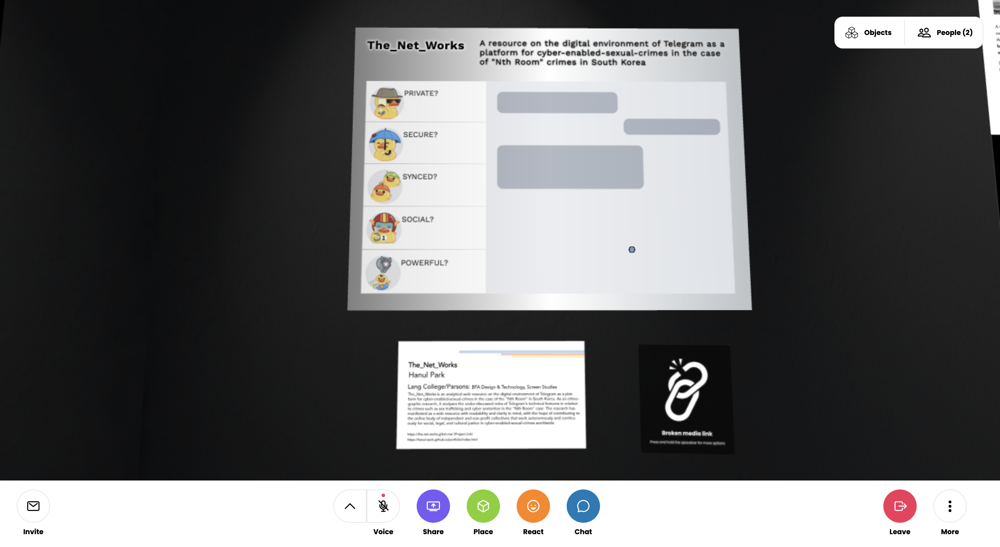
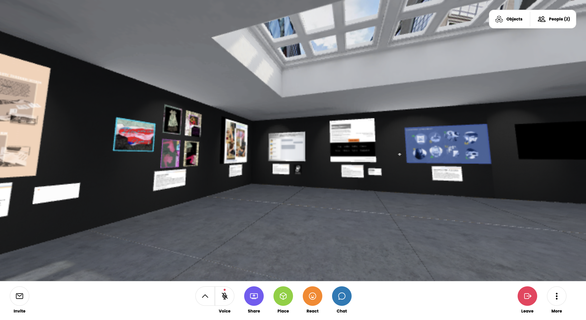

The_Net_Works
Ethnographic Analysis + Web Design + Front-End Development
A Resource on the Digital Environment of Telegram as a Platform for Sexual Cyber-Enabled-Crimes in the Case of "Nth Room" Crimes in South Korea, created in
Glitch
2021
Tool | Google Data Studio, Sheets, Figma
Code | HTML, CSS, JavaScript
Anthropology & Design Exhibition VR Space
PUBLISHED SITE
I. CONCEPT
WHAT
This research analyzes the cyber environment of the messaging platform Telegram as a space for sextortation and trafficking in the "Nth Room" case, with a focus on the under-discussed roles of Telegram's technical features. This ethnographic analysis manifests as a web map resource contributing to the online body of collectives for justice in digital sex crimes worldwide.
WHY
This project inquires into the cyber environments of the securely encrypted, inarguably top-notch messenger platform Telegram, on which numerous, heinous, digital sex crimes known as the "Nth Room" case took place. The involved crimes include
blackmailing, sextortation, digital sex trafficking, and the spread and sales of sexually exploitative videos, which altogether occur in a sort of cyclically repetitive series.
The scandal's victims are at least 103 women, including 26
minors, and participants of the crimes are about 60,000 users, who used over 260,000 login IDs. The original chat rooms of the "Nth Room" case appeared in 2018, and took advantage of the varied technological features of Telegram app in order
for such long term, large scale, and multilayered abuses to happen. The Net Works is a web map resource that makes critical connections between the technical functions of Telegram app and the brutal crimes of the "Nth Room" case based on its
analytical ethnographic research.
HOW
This project asks the undermentioned questions regarding the dangers of seemingly democratic and purely positive applications of advanced technologies to accessible communication tools. The research dissects how encryption and interaction
technologies combine with the violently abusive culture in order to cause unprecedented damage on personal and societal levels.
The project subsequently suggests how critical it is for advanced technological tools to cooperate in achieving
justice in the face of exploited humanity, as well as take responsibility in creating not passively neutral but actively equitable cyberspace. This study will offer a refreshing perpepective in the midst of binary discourses on digital
democracy and technoliberalism, and spark conversations on the philosophies of privacy, anonymity, and freedom in relation to the technologies of encryption and sociability.
II. ANNOTATED BIBLIOGRAPHY
Kim, Hyejin. Current Status of Response to Digital Child Sexual Slavery and Comparative Analysis of Overseas Crime Prediction System Using Artificial Intelligence. Journal of Digital Convergence, vol. 18. no. 7, 2020, pp. 357-368.
The author, CEO at Global Digital Sexual Crime Policy Research Institute, discusses the primary criminal methodologies of "Nth Room'' case and the secure technological features of Telegram app and darkcoin exchange systems that the criminals took advantage of. The article mentions how the social responses to the case recognize the severe mental and psychological destruction the crimes caused to the victims, leading the discourse to the criticality of the various technologies that expanded the paradigms of sexual exploitation. Cyber sexual extortion was the crucial first step to the subsequent multilayered sexual exploitations. The matter of "possession" needs to be clarified in image-based sexual abuse considering the increasingly streaming-based distribution of images in digital platforms. Digital platforms must deliberate on their responsibilities in preventing distribution of sexually explotative images, especially considering how Telegram refused to cooperate with the investigation of the "Nth Room'' case for the sake of allerged privacy of its users. All of the four largest cryptocurrency exchange platforms in Korea agreed to cooperate with the investigation, but the transactions made in foreign exchanges cannot be accessed, making it extremely difficult to identify them. Another critical issue is quick and permanent deletion of chat rooms containing evidence of past sexual abuses in the Telegram app. All these analyses are extremely helpful to identifying relations between criminal methodologies and technological features in my project.
Charles, Angela T. The Abuse of Teenagers by Online Predators Facilitated Through the Internet and Social Media. MS Thesis. Utica College, May 2017. Feb 17 2021, pp. 1-17.
The author effectively analyzes the issue of cyber sexual abuse by introducing the relavant jargons and concepts along with examples. The thesis contextualizes the general meaning and history of cybercrime despite its lack of clear definition, and introduces its two primary categories: advanced cybercrime and cyber-enabled-crime. The latter, cyber-enabled-crime, includes sexual extortion and sexual exploitation, both of which are the primary methods of abuse in the "Nth Room'' case. The contextualization of sexual cyber-enabled-crime allows for an understanding that can place my subject in the larger picture. The author also discusses the general advantages of the Internet and social media for sexual crimes, introducing different types of sexual predators. "The Different Acts of Abuse that are Committed Using the Internet" chapter is particularly helpful, because it explains the methods of cyber sexual abuse, such as human sex trafficking, an example of sexual exploitation, and sexual extortion or sextortion, all of which are relevant.
O'Malley, Roberta L. Holt, Karen M. Cyber Sextortion: An Exploratory Analysis of Different Perpetrators Engaging in a Similar Crime. Journal of Interpersonal Violence, 2020, pp. 1-26.
The authors, whose researches focus on sexual violence and sexual deviance, offer criminological discussions of cyber sextortation, which is a type of image-based sexual abuse (IBSA), through a qualitative content analysis of media articles and court documents regarding crimes of 152 cyber sextortion offenders. Among the four resulting themes of the analyses are (a) minor-focused cyber sextortation offenders and (b) cybercrime cyber sextortion offenders, both of which are the primary types of crimes in the "Nth Room'' case. The article introduces three distinctive characteristics of cyber sextortion in comparison to other interpersonal crimes: cyberspace, possession, and extortion. It discusses how a varied group of individual cyber sextortion offenders share a similar method for personal gain of sex, power, dominance, coercion, or money. These understandings are helpful to analyzing cyber sextortion methodology in my subject. Moreover, the article's statistics-centered discourse on the research results suggest some exemplary directions for analytical writing.
III. PRODUCT


IV. PUBLISHING
National Undergraduate Research Conference on Science, Technology, Medicine and Society
Vassar College | 2021
"The STMS Conference is an opportunity for undergraduates from across divisions to present their research on myriad topics related to the intersections of science, technology, medicine, and society."
Read More
Anthropology & Design Exhibition
The New School | 2021
"ADX invites students from varied disciplinary backgrounds to explore and experiment with anthropological and design research methods that open up new epistemological and creative possibilities, and illuminate our lived experiences and
imaginations. The exhibition consists of a virtual reality showcase and a series of virtual moderated panels with artists and presenters."
Read More
GALLERY 1 (AUTO)ETHNOGRAPHY & MAPPING
VR Exhibition Space



